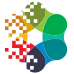

QNarcIS
QGIS plugin for the Slovenian Nature Information System - NarcIS.
The QNarcIS plugin connects to the NarcIS nature information system, supports advanced spatial queries, and provides simple access to biodiversity, nature-conservation, and supporting layers. With the "Send layer" functionality, these queries can be executed directly in the NarcIS portal. The plugin also includes user instructions and announcements of current updates from the GIS forum in the NarcIS portal.
QNarcIS was developed within the framework of the LIFE NarcIS project and continues to be developed and upgraded as part of the SLO4D project.
More details and documentation: https://github.com/the-tomazz/qnarcis